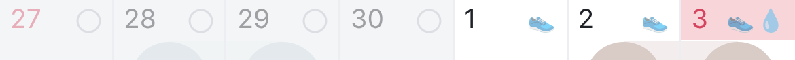
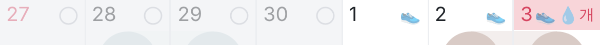
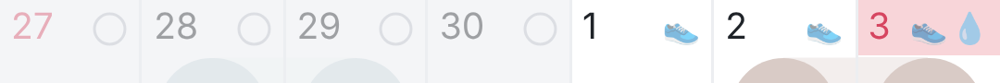
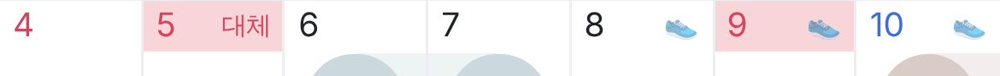
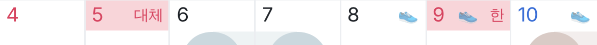
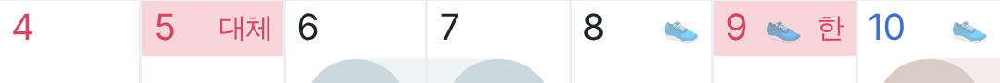

명절 · 공휴일 날 도장이 있으면 이름은 한 글자로
조깅(목·금·토) + 비타민(9월 매일) 예시 · 날짜 줄만 크게 확대 · 들어갈 자리가 없으면 분홍 줄만
9월 추석 연휴 (24·25·26일, 도장 2개 + 두 자리 날짜)
지금 (390)
바꾼 뒤 (390)
바꾼 뒤 (작은 폰 360)
10월 첫 주 (3일 개천절 = 도장 2개 + 한 자리 날짜)
지금 (390)

바꾼 뒤 (390)

바꾼 뒤 (작은 폰 360)

10월 둘째 주 (5일 대체 = 도장 없음 · 9일 한글날 = 도장 1개)
지금 (390)

바꾼 뒤 (390)

바꾼 뒤 (작은 폰 360)

· 도장 없음 → 두 글자 (대체) · 도장 있음 → 한 글자 (추 · 개 · 한), 대체공휴일은 "체", 연휴는 "연" · 칸에 안 들어가면 → 분홍 줄만